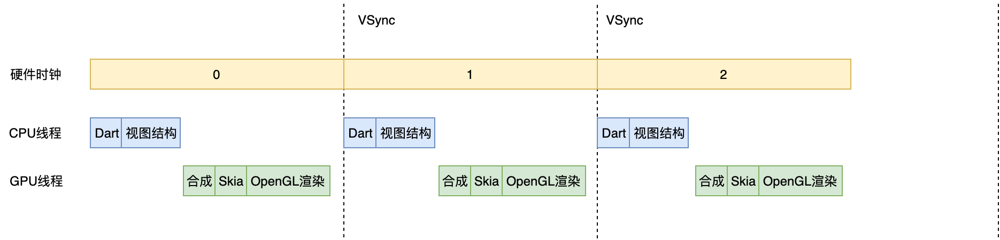
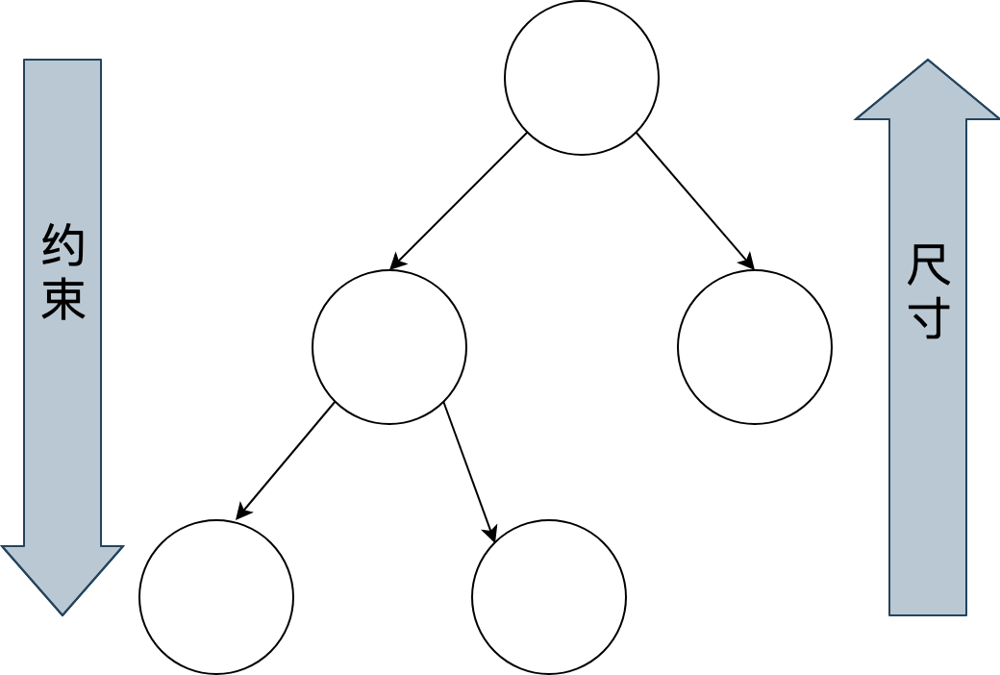
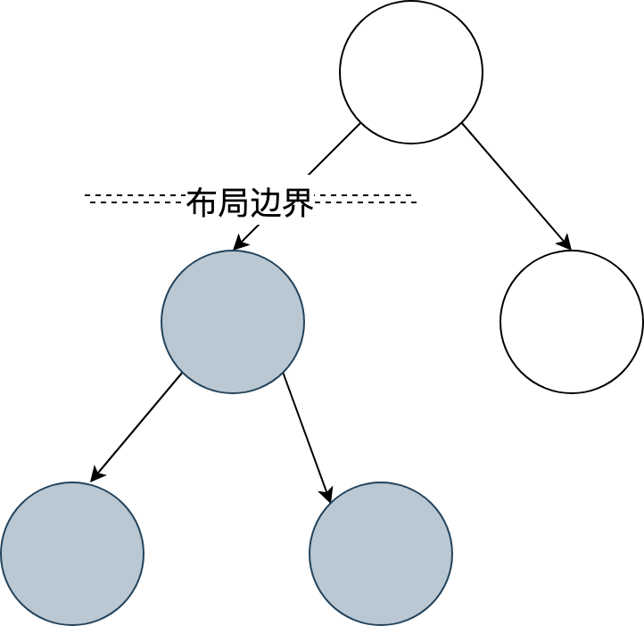
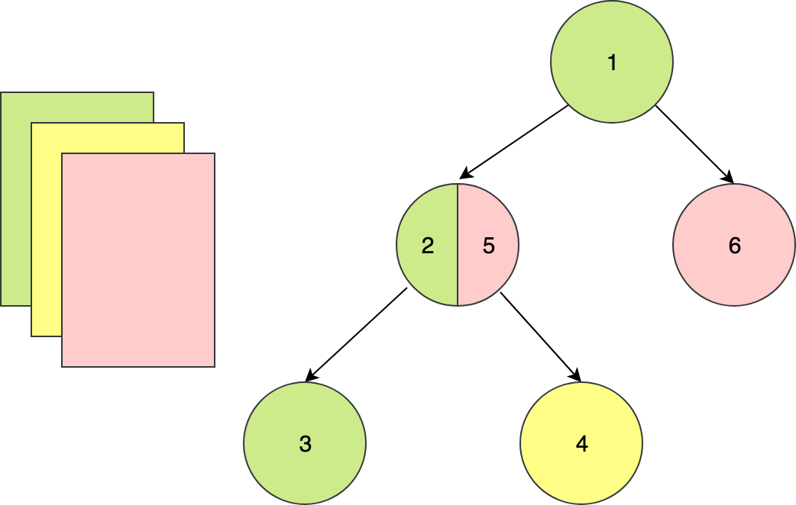
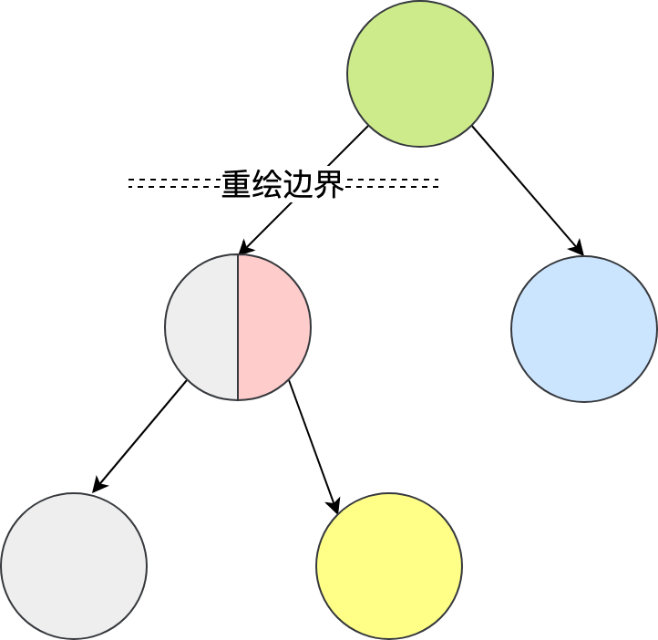
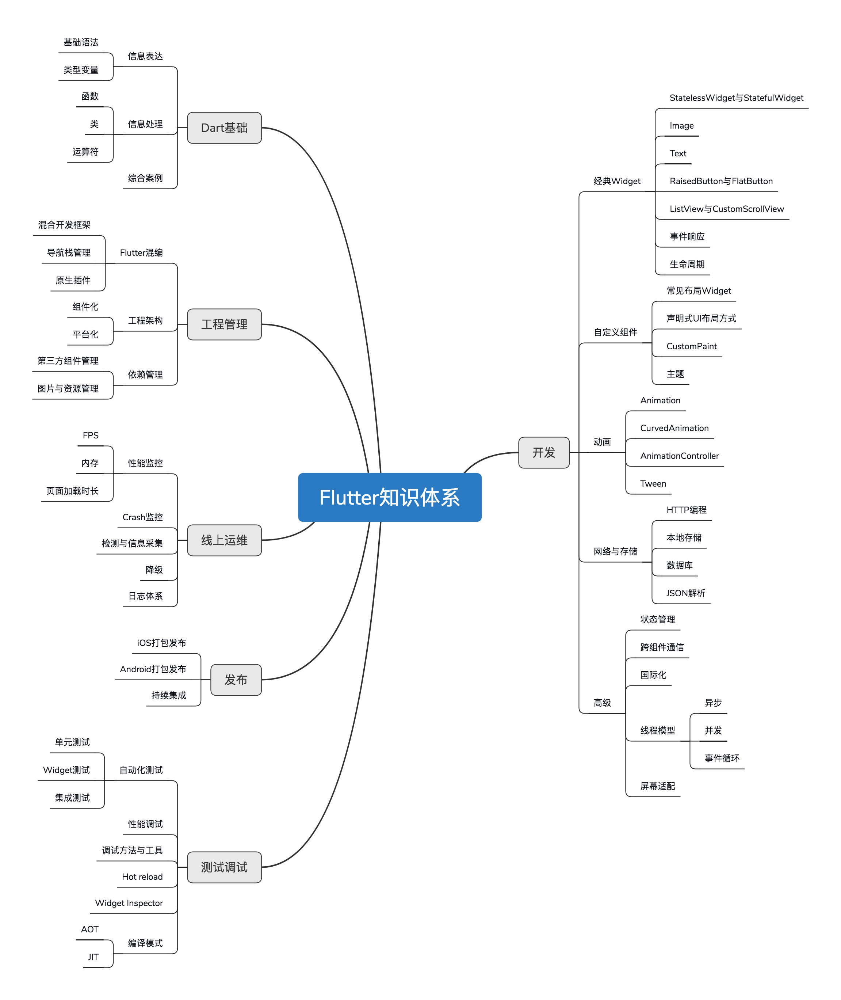

你好，我是陈航。
Flutter 是什么？它出现的动机是什么，解决了哪些痛点？相比其他跨平台技术，Flutter 的优势在哪里？……相信很多人在第一眼看到 Flutter 时，都会有类似的疑问。
别急，在今天的这篇文章中，我会与你介绍 Flutter 的历史背景和运行机制，并以界面渲染过程为例与你讲述其实现原理，让你对 Flutter 能够有一个全方位的认知和感受。在对 Flutter 有了全面了解后，这些疑问自然也就迎刃而解了。
接下来，我们就从 Flutter 出现的历史背景开始谈起吧。
Flutter 出现的历史背景
为不同的操作系统开发拥有相同功能的应用程序，开发人员只有两个选择：
- 使用原生开发语言（即 Java 和 Objective-C），针对不同平台分别进行开发。
- 使用跨平台解决方案，对不同平台进行统一开发。
原生开发方式的体验最好，但研发效率和研发成本相对较高；而跨平台开发方式研发虽然效率高，但为了抹平多端平台差异，各类解决方案暴露的组件和 API 较原生开发相比少很多，因此研发体验和产品功能并不完美。
所以，最成功的跨平台开发方案其实是依托于浏览器控件的 Web。浏览器保证了 99% 的概率下 Web 的需求都是可以实现的，不需要业务将就“技术”。不过，Web 最大的问题在于它的性能和体验与原生开发存在肉眼可感知的差异，因此并不适用于对体验要求较高的场景。
对于用户体验更接近于原生的 React Native，对业务的支持能力却还不到浏览器的 5%，仅适用于中低复杂度的低交互类页面。面对稍微复杂一点儿的交互和动画需求，开发者都需要 case by case 地去 review，甚至还可能要通过原生代码去扩展才能实现。
这些因素，也就导致了虽然跨平台开发从移动端诞生之初就已经被多次提及，但到现在也没有被很好地解决。
带着这些问题，我们终于迎来了本次专栏的主角——Flutter。
Flutter 是构建 Google 物联网操作系统 Fuchsia 的 SDK，主打跨平台、高保真、高性能。开发者可以通过 Dart 语言开发 App，一套代码可以同时运行在 iOS 和 Android 平台。 Flutter 使用 Native 引擎渲染视图，并提供了丰富的组件和接口，这无疑为开发者和用户都提供了良好的体验。
从 2017 年 5 月，谷歌公司发布的了 Alpha 版本的 Flutter，到 2018 年底 Flutter Live 发布的 1.0 版本，再到现在最新的 1.5 版本（截止至 2019 年 7 月 1 日），Flutter 正在赢得越来越多的关注。
很多人开始感慨，跨平台技术似乎终于迎来了最佳解决方案。那么，接下来我们就从原理层面去看看，Flutter 是如何解决既有跨平台开发方案问题的。
Flutter 是怎么运转的？
与用于构建移动应用程序的其他大多数框架不同，Flutter 是重写了一整套包括底层渲染逻辑和上层开发语言的完整解决方案。这样不仅可以保证视图渲染在 Android 和 iOS 上的高度一致性（即高保真），在代码执行效率和渲染性能上也可以媲美原生 App 的体验（即高性能）。
这，就是 Flutter 和其他跨平台方案的本质区别：
- React Native 之类的框架，只是通过 JavaScript 虚拟机扩展调用系统组件，由 Android 和 iOS 系统进行组件的渲染；
- Flutter 则是自己完成了组件渲染的闭环。
那么，Flutter 是怎么完成组件渲染的呢？这需要从图像显示的基本原理说起。
在计算机系统中，图像的显示需要 CPU、GPU 和显示器一起配合完成：CPU 负责图像数据计算，GPU 负责图像数据渲染，而显示器则负责最终图像显示。
CPU 把计算好的、需要显示的内容交给 GPU，由 GPU 完成渲染后放入帧缓冲区，随后视频控制器根据垂直同步信号（VSync）以每秒 60 次的速度，从帧缓冲区读取帧数据交由显示器完成图像显示。
操作系统在呈现图像时遵循了这种机制，而 Flutter 作为跨平台开发框架也采用了这种底层方案。下面有一张更为详尽的示意图来解释 Flutter 的绘制原理。

可以看到，Flutter 关注如何尽可能快地在两个硬件时钟的 VSync 信号之间计算并合成视图数据，然后通过 Skia 交给 GPU 渲染：UI 线程使用 Dart 来构建视图结构数据，这些数据会在 GPU 线程进行图层合成，随后交给 Skia 引擎加工成 GPU 数据，而这些数据会通过 OpenGL 最终提供给 GPU 渲染。
在进一步学习 Flutter 之前，我们有必要了解下构建 Flutter 的关键技术，即 Skia 和 Dart。
Skia 是什么？
要想了解 Flutter，你必须先了解它的底层图像渲染引擎 Skia。因为，Flutter 只关心如何向 GPU 提供视图数据，而 Skia 就是它向 GPU 提供视图数据的好帮手。
Skia 是一款用 C++ 开发的、性能彪悍的 2D 图像绘制引擎，其前身是一个向量绘图软件。2005 年被 Google 公司收购后，因为其出色的绘制表现被广泛应用在 Chrome 和 Android 等核心产品上。Skia 在图形转换、文字渲染、位图渲染方面都表现卓越，并提供了开发者友好的 API。
目前，Skia 已然是 Android 官方的图像渲染引擎了，因此 Flutter Android SDK 无需内嵌 Skia 引擎就可以获得天然的 Skia 支持；而对于 iOS 平台来说，由于 Skia 是跨平台的，因此它作为 Flutter iOS 渲染引擎被嵌入到 Flutter 的 iOS SDK 中，替代了 iOS 闭源的 Core Graphics/Core Animation/Core Text，这也正是 Flutter iOS SDK 打包的 App 包体积比 Android 要大一些的原因。
底层渲染能力统一了，上层开发接口和功能体验也就随即统一了，开发者再也不用操心平台相关的渲染特性了。也就是说，Skia 保证了同一套代码调用在 Android 和 iOS 平台上的渲染效果是完全一致的。
为什么是 Dart？
除了我们在第 2 篇预习文章“预习篇 · Dart 语言概览”中提到的，Dart 因为同时支持 AOT 和 JIT，所以具有运行速度快、执行性能好的特点外，Flutter 为什么选择了 Dart，而不是前端应用的准官方语言 JavaScript 呢？这个问题很有意思，但也很有争议。
很多人说，选择 Dart 是 Flutter 推广的一大劣势，毕竟多学一门新语言就多一层障碍。想想 Java 对 Android，JavaScript 对 NodeJS 的推动，如果换个语言可能就不一样了。
但，Google 公司给出的原因很简单也很直接：Dart 语言开发组就在隔壁，对于 Flutter 需要的一些语言新特性，能够快速在语法层面落地实现；而如果选择了 JavaScript，就必须经过各种委员会和浏览器提供商漫长的决议。
事实上，Flutter 的确得到了兄弟团队的紧密支持。2018 年 2 月发布的 Dart 2.0，2018 年 12 月发布的 Dart 2.1，2019 年 2 月发布的 Dart 2.2，2019 年 5 月发布的 Dart2.3，每次发布都包含了为 Flutter 量身定制的诸多改造（比如，改进的 AOT 性能、更智能的类型隐式转换等）。
当然，Google 公司选择使用 Dart 作为 Flutter 的开发语言，我想还有其他更有说服力的理由：
- Dart 同时支持即时编译 JIT 和事前编译 AOT。在开发期使用 JIT，开发周期异常短，调试方式颠覆常规（支持有状态的热重载）；而发布期使用 AOT，本地代码的执行更高效，代码性能和用户体验也更卓越。
- Dart 作为一门现代化语言，集百家之长，拥有其他优秀编程语言的诸多特性（比如，完善的包管理机制）。也正是这个原因，Dart 的学习成本并不高，很容易上手。
- Dart 避免了抢占式调度和共享内存，可以在没有锁的情况下进行对象分配和垃圾回收，在性能方面表现相当不错。
Dart 是一门优秀的现代语言，最初设计也是为了取代 JavaScript 成为 Web 开发的官方语言。竞争对手如此强劲，最后的结果可想而知。这，也是为什么相比于其他热门语言，Dart 的生态要冷清不少的原因。
而随着 Flutter 的发布，Dart 开始转型，其自身定位也发生了变化，专注于改善构建客户端应用程序的体验，因此越来越多的开发者开始慢慢了解、学习这门语言，并共同完善它的生态。凭借着 Flutter 的火热势头，辅以 Google 强大的商业运作能力，相信转型后的 Dart 前景会非常光明。
Flutter 的原理
在了解了 Flutter 的基本运作机制后，我们再来深入了解一下 Flutter 的实现原理。
首先，我们来看一下 Flutter 的架构图。我希望通过这张图以及对应的解读，你能在开始学习的时候就建立起对 Flutter 的整体印象，能够从框架设计和实现原理的高度去理解 Flutter 区别其他跨平台解决方案的关键所在，为后面的学习打好基础，而不是直接一上来就陷入语言和框架的功能细节“泥潭”而无法自拔。

备注：此图引自Flutter System Overview
Flutter 架构采用分层设计，从下到上分为三层，依次为：Embedder、Engine、Framework。
- Embedder 是操作系统适配层，实现了渲染 Surface 设置，线程设置，以及平台插件等平台相关特性的适配。从这里我们可以看到，Flutter 平台相关特性并不多，这就使得从框架层面保持跨端一致性的成本相对较低。
- Engine 层主要包含 Skia、Dart 和 Text，实现了 Flutter 的渲染引擎、文字排版、事件处理和 Dart 运行时等功能。Skia 和 Text 为上层接口提供了调用底层渲染和排版的能力，Dart 则为 Flutter 提供了运行时调用 Dart 和渲染引擎的能力。而 Engine 层的作用，则是将它们组合起来，从它们生成的数据中实现视图渲染。
- Framework 层则是一个用 Dart 实现的 UI SDK，包含了动画、图形绘制和手势识别等功能。为了在绘制控件等固定样式的图形时提供更直观、更方便的接口，Flutter 还基于这些基础能力，根据 Material 和 Cupertino 两种视觉设计风格封装了一套 UI 组件库。我们在开发 Flutter 的时候，可以直接使用这些组件库。
接下来，我以界面渲染过程为例，和你介绍 Flutter 是如何工作的。
页面中的各界面元素（Widget）以树的形式组织，即控件树。Flutter 通过控件树中的每个控件创建不同类型的渲染对象，组成渲染对象树。而渲染对象树在 Flutter 的展示过程分为四个阶段：布局、绘制、合成和渲染。
布局
Flutter 采用深度优先机制遍历渲染对象树，决定渲染对象树中各渲染对象在屏幕上的位置和尺寸。在布局过程中，渲染对象树中的每个渲染对象都会接收父对象的布局约束参数，决定自己的大小，然后父对象按照控件逻辑决定各个子对象的位置，完成布局过程。

为了防止因子节点发生变化而导致整个控件树重新布局，Flutter 加入了一个机制——布局边界（Relayout Boundary），可以在某些节点自动或手动地设置布局边界，当边界内的任何对象发生重新布局时，不会影响边界外的对象，反之亦然。

绘制
布局完成后，渲染对象树中的每个节点都有了明确的尺寸和位置。Flutter 会把所有的渲染对象绘制到不同的图层上。与布局过程一样，绘制过程也是深度优先遍历，而且总是先绘制自身，再绘制子节点。
以下图为例：节点 1 在绘制完自身后，会再绘制节点 2，然后绘制它的子节点 3、4 和 5，最后绘制节点 6。

可以看到，由于一些其他原因（比如，视图手动合并）导致 2 的子节点 5 与它的兄弟节点 6 处于了同一层，这样会导致当节点 2 需要重绘的时候，与其无关的节点 6 也会被重绘，带来性能损耗。
为了解决这一问题，Flutter 提出了与布局边界对应的机制——重绘边界（Repaint Boundary）。在重绘边界内，Flutter 会强制切换新的图层，这样就可以避免边界内外的互相影响，避免无关内容置于同一图层引起不必要的重绘。

重绘边界的一个典型场景是 Scrollview。ScrollView 滚动的时候需要刷新视图内容，从而触发内容重绘。而当滚动内容重绘时，一般情况下其他内容是不需要重绘的，这时候重绘边界就派上用场了。
合成和渲染
终端设备的页面越来越复杂，因此 Flutter 的渲染树层级通常很多，直接交付给渲染引擎进行多图层渲染，可能会出现大量渲染内容的重复绘制，所以还需要先进行一次图层合成，即将所有的图层根据大小、层级、透明度等规则计算出最终的显示效果，将相同的图层归类合并，简化渲染树，提高渲染效率。
合并完成后，Flutter 会将几何图层数据交由 Skia 引擎加工成二维图像数据，最终交由 GPU 进行渲染，完成界面的展示。这部分内容，我已经在前面的内容中介绍过，这里就不再赘述了。
接下来，我们再看看学习 Flutter，都需要学习哪些知识。
学习 Flutter 需要掌握哪些知识？
终端设备越来越碎片化，需要支持的操作系统越来越多，从研发效率和维护成本综合考虑，跨平台开发一定是未来大前端的趋势，我们应该拥抱变化。而 Flutter 提供了一套彻底的移动跨平台方案，也确实弥补了如今跨平台开发框架的短板，解决了业界痛点，极有可能成为跨平台开发领域的终极解决方案，前途非常光明。
那么，我们学习 Flutter 都需要掌握哪些知识呢？
我按照 App 的开发流程（开发、调试测试、发布与线上运维）将 Flutter 的技术栈进行了划分，里面几乎包含了 Flutter 开发需要的所有知识点。而这些所有知识点，我会在专栏中为你一一讲解。掌握了这些知识点后，你也就具备了企业级应用开发的必要技能。
这些知识点，如下图所示：

有了这张图，你是否感觉到学习 Flutter 的路线变得更加清晰了呢？
小结
今天，我带你了解了 Flutter 的历史背景与运行机制，并以界面渲染过程为例，从布局、绘制、合成和渲染四个阶段讲述了 Flutter 的实现原理。此外，我向你介绍了构建 Flutter 底层的关键技术：Skia 与 Dart，它们是 Flutter 有别于其他跨平台开发方案的核心所在。
最后，我梳理了一张 Flutter 学习思维导图，围绕一个应用的迭代周期介绍了 Flutter 相关的知识点。我希望通过这个专栏，能和你把 Flutter 背后的设计原理和知识体系讲清楚，让你能对 Flutter 有一个整体感知。这样，在你学完这个专栏以后，就能够具备企业级应用开发的理论基础与实践。
思考题
你是如何理解 Flutter 的三大特点：跨平台、高保真、高性能的？你又打算怎么学习这个专栏呢？
欢迎你在评论区给我留言分享你的观点，我会在下一篇文章中等待你！感谢你的收听，也欢迎你把这篇文章分享给更多的朋友一起阅读。

COMMUNITY NOTES
读者评论
我有个疑问，“以下图为例：节点 1 在绘制完自身后，会再绘制子节点 2 和 6，最后绘制子节点 5、3 和 4。”这难道不是广度优先吗？深度优先不是先绘制1，然后2,3,5,4,6吗？
跨端方案的发展本质上是在解决一个矛盾：企业需要多端研发（空间复杂度）以及开发周期长（时间复杂度）和用户体验的矛盾。而用户体验差往往表现在响应慢上（时间复杂度高）。
还是不太明白渲染树在图层上渲染的逻辑如何能用深度优先遍历的思路。深度优先的作用不是找到一个点s到另一个点p的路径（不是最优路径）吗？
感觉这种教学流程很好 开头有个大致的了解而不是一上来就扎进编码细节无法自拔
总感觉讲的还不是特别透彻，可能受限于篇幅原因吧，比如渲染的过程顺序这些相对于其他平台或者原生来说，为了避免重复绘制，到底做了哪些优化？深度优先遍历等应该是普遍的思想，另外希望老师多放一些相关知识点的链接，比如涉及到GPU的放一些讲解原理的优质文章链接，期待老师后面的讲解
音频直播类的怎么办呢？不像推送将推送收到的普通数据转发给flutter就行了，将解码后的流转给flutter吗
老师好，鉴于flutter的需要很多的其他功能sdk兼容，混合开发，还是纯粹的flutter开发好呢，两者怎么抉择
flutter界面渲染过程中的 布局边界、和渲染边界 这部分有点抽象。不是太能理解
老师，flutter除了ios和android 其它终端可以用吗，桌面和浏览器端未来前景怎么样
请教老师一个问题：如果flutter应用是通过推送打开的，如何获取到推送的数据，并且跳转到指定页面，而不是启动页呢？
在不同平台基于Skia引擎提供统一的渲染，学习的话，可以去flutter的中文网线先上手，然后结合老师的专栏
Skia 引擎加工成 GPU 数据， 为什么不直接提供给 GPU 渲染，而又opengl最终提供给gpu渲染
期待后面的内容